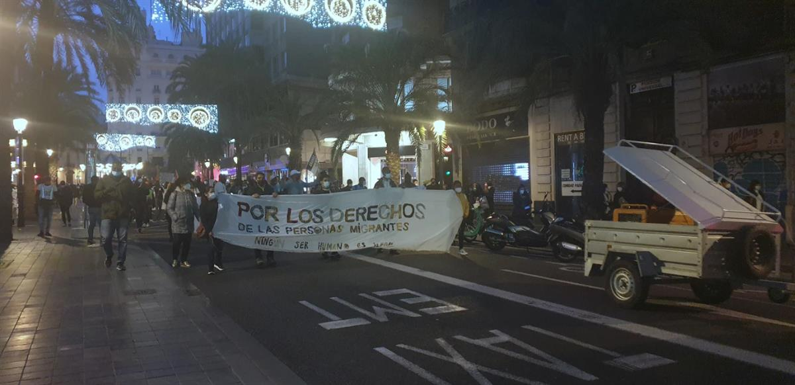
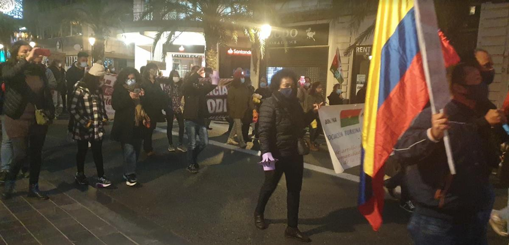
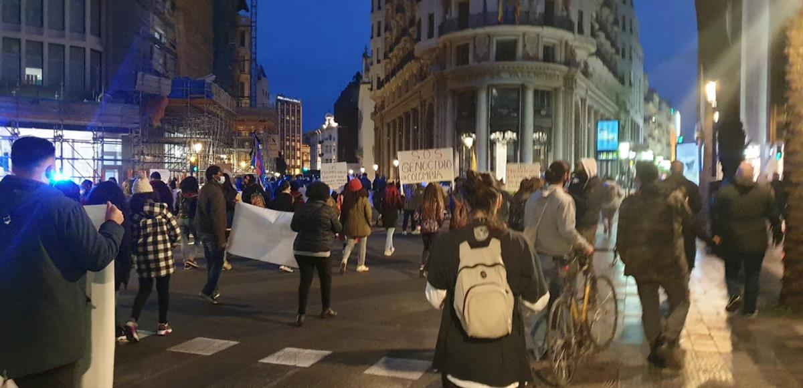
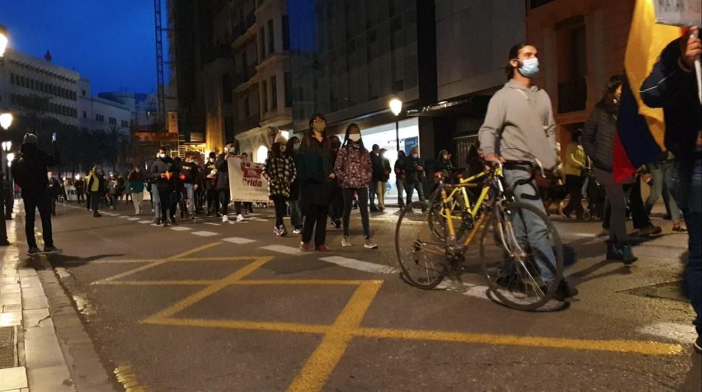
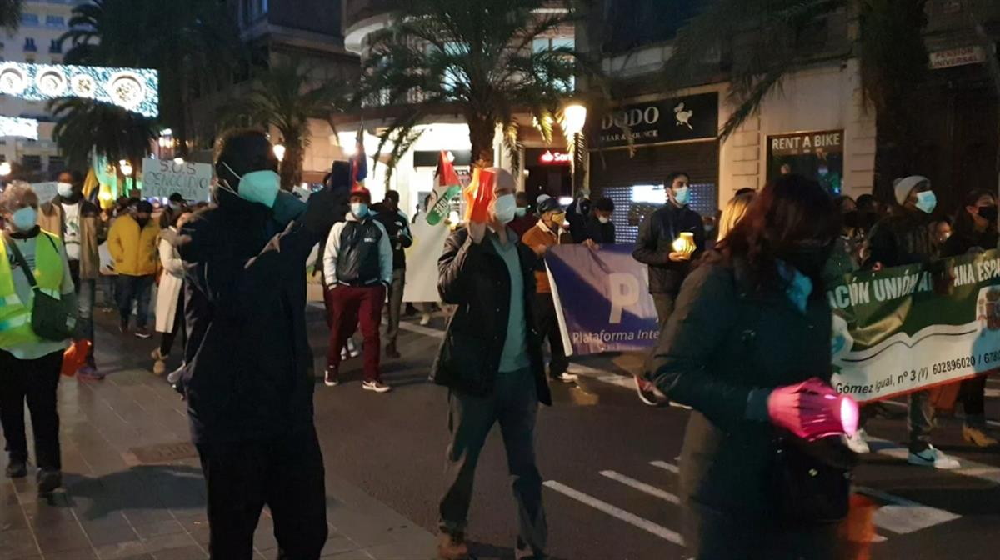

Guest Editor Ciara Fabbri
Hundreds of People Protest in Valencia for Migrants Rights
Author - Chiara Fabbri
21 December 2020
On December 19 at 5:30 p.m. a march organized by the #RegularizaciónYa movement took place in the Plaza del Ayuntamiento (València, Spain) as part of the commemoration of International Migrants Day on Friday 18.
Hundreds of people have demonstrated under the slogan: “Regularization Now, It's Not Charity, It's Social Justice”
The attendances demanded the Spanish Government and the City Council to regularize the residency of more than 600 thousand people who currently live in the Spanish territory in an irregular administrative manner. According to EpData November hit a yearly peak of illegal migrants arriving in Spain (i.e. 11.169 people).
Marieme, 43 commented: “We are here to ask for regularization of migrants. We are kept here illegally against our will, when we want our work to be regularized. This is a form of institutional injustice, where we are the only ones to pay the costs.”.
Alberto, 37 stated: “We leave Colombia and come here, because they kill us there. It is our right to migrate”
The protesters, animated by the drums, collectively chanted:
“We have the right to have rights”
“No human being is illegal”
“Freedom, Rights and Equality”
Among the themes protested there was the #CieNO (Closure of detention centres for migrants). The manifestant claimed the CIEs deprive people of their liberty, even though they have not committed any crime other than mere administrative offense. They find it unjust to detain in inhumane conditions people who are migrating to find protection, and create a better future for themselves.
One of the final sections of the protest was dedicated to remembering the death of the 480 migrants who died on the Senegalese coast who were attempting to reach Spain. A member form #RegularizaciónYa speaking at the microphone stated: “They were our brothers, people like us, coming from countries from the South (hemisphere), looking for protection and fighting for their dreams. A lot of them were women and children”.




